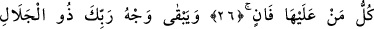
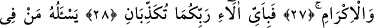
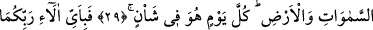
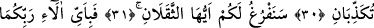
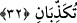
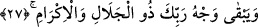

HER CANLI YOK OLACAK
26. Yer yüzünde bulunan her canlı yok olacak.
27. Ancak azamet ve ikram sâhibi Rabbinin zâtı bâki kalacak.
28. Öyleyken Rabbinizin hangi nimetlerini yalanlayabilirsiniz?
29. Göklerde ve yerde bulunan herkes, O’ndan ister. O, her an yaratma
hâlindedir.
30. O halde Rabbinizin hangi nimetlerini yalanlayabilirsiniz?
31. Ey insan ve cin! Sizin de hesabınızı ele alacağız.
32. Hal bu iken Rabbinizin nimetlerinden hangisini yalanlayabilirsiniz?
Âyet-i kerîmede yeryüzünde bulunan bütün varlıklar kasdedilmiştir. Yâni insanlar,
cinler, her şey şübhesiz yok olacaktır.
Bu âyet-i kerîme indiğinde melekler, insanoğlu mahvoldu, dediler. “Her canlı ölümü
tadacaktır.” (Al-i İmran, 3/185) âyet-i kerîmesi inince, kendilerinin de öleceklerini
kesin olarak anladılar. Meleklerin latif olan cisimleri ve bu cisimlere bağlı olarak insan
ruhları gibi ruhları vardır. Ancak, mücerred olan yüce ruhlar yok olmaz.
27. Ancak azamet ve ikram sâhibi Rabbinin zâtı bâkî kalacaktır.
Âyet-i kerîmede geçen “vech” lafzından maksad O’nun yüce zâtıdır. “Allah onun
vechini mükerrem kılsın” sözünde, yâni “zâtını mükerrem kılsın” demektir. Yüz, zât
yerine istiare olarak kullanılmış bilinen bir uzuvdur. Çünkü yüz, uzuvların en şereflisi;
bilinen duyguların toplandığı secde yeri, huşu ve tevazu izlerinin yansıyıp göründüğü
yerdir.
Kâdî Beydâvî demiştir ki; şâyet varlıkların bütün yönlerini araştırıp yüzlerini
inceleyecek olsan, aslında, hepsinin fânî, sonunda yok olmağa mahkum olduğunu
görürsün. Ancak, Allah’ın zâtı müstesnâdır.